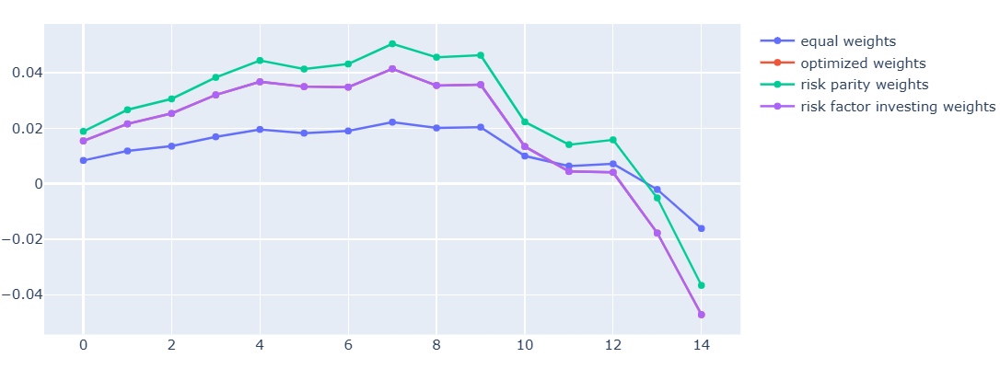
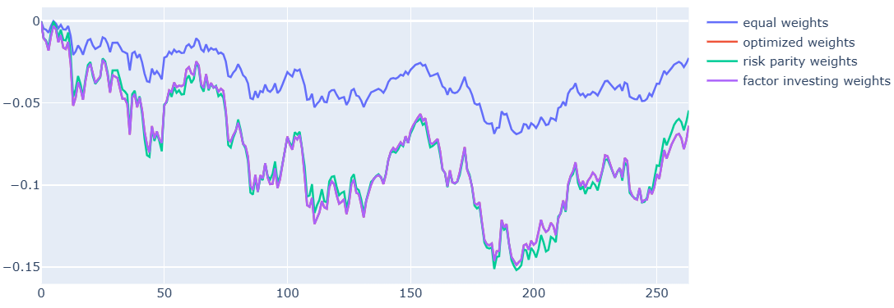
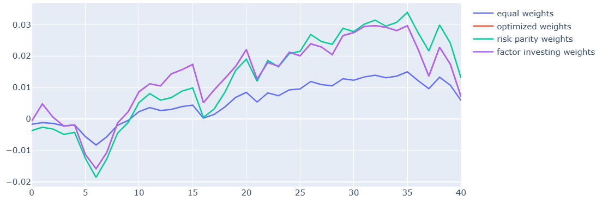

Stress testing
Bear market performance and analysis
In this section we pick out some historical bear market time periods and test the main portfolio strategy and compare it to some other strategies.
Test 1: 2019-10-01 to 2020-03-01 (Covid)
Chosen weights:
Std. weights: [0.05555581, 0.05555581, 0.05555581, 0.05555581, 0.05555581, 0.05555581, 0.05555581, 0.61110934]
Factor investing: [0.31712806, 0.07720955, 0.07720955, 0.07720955, 0.07720955, 0.07720955, 0.07720955, 0.21961464]
Risk parity: [0.31713158, 0.07720915, 0.07720915, 0.07720915, 0.07720915, 0.07720915, 0.07720915, 0.2196135]
| Metric | Optimized Weights | Factor Investing Weights | Equal Weights | Risk Parity |
|---|---|---|---|---|
| Var | -0.021689452 | -0.021689385 | -0.009783054509689217 | -0.02201177228372069 |
| CVaR | -0.025869552 | -0.025869478 | -0.012141480218090986 | -0.027318205932842975 |
| Sharpe | -4.305883387338538 | -4.3058660869515935 | -3.271080110105687 | -3.0905770810038615 |
| Sortino | -4.817124449957003 | -4.81710499564439 | -4.012760189134961 | -3.791330158436424 |
| Mean Return | -0.0031441017 | -0.0031440821 | -0.001066794592077911 | -0.0024002768880687403 |
| Max Drawdown | -0.10968347 | -0.10968339 | -0.10527719 | -0.10527719 |

Test 2: 2021-02-22 to 2023-01-23
Observation: all active strategies concentrate heavily in US equities (28-32%) + gold (22%) due to the previous momentum. This leads to worse performance than equal weights during the March 2020 reversal.
Reason that this happens: momentum strategies suffer "momentum crashes" when recent winners reverse sharply. Equal weights provides better diversification.
Chosen weights:
Std. weights: [0.05555582, 0.05555582, 0.05555582, 0.05555582, 0.05555582, 0.05555582, 0.05555582, 0.61110926]
Factor investing: [0.28344768, 0.08130426, 0.08130426, 0.08130426, 0.08130426, 0.08130426, 0.08130426, 0.22872671]
Risk parity: [0.28343034, 0.08130623, 0.08130623, 0.08130623, 0.08130623, 0.08130623, 0.08130623, 0.22873227]
| Metric | Optimized Weights | Factor Investing Weights | Equal Weights | Risk Parity |
|---|---|---|---|---|
| Var | -0.009604997 | -0.009605173 | -0.004427317925649577 | -0.00996141798785949 |
| CVaR | -0.014319231 | -0.0143194785 | -0.006468058642165958 | -0.01455306277674845 |
| Sharpe | -0.6888758765476396 | -0.6888790334975917 | -0.8769276358837523 | -0.5864910182297333 |
| Sortino | -1.0765247829643232 | -1.0765300065953394 | -1.3620752481604324 | -0.9109587456370521 |
| Mean Return | -0.00021940732 | -0.00021941445 | -7.969484073316845e-05 | -0.00017931253940894798 |
| Max Drawdown | -0.16930733 | -0.16930845 | -0.15853415 | -0.15853415 |

Test 3: 2024-07-01 to 2025-03-01
# Chosen weights
Std. weights: [0.05555582, 0.05555582, 0.05555582, 0.05555582, 0.05555582, 0.05555582, 0.05555582, 0.61110928]
Factor investing: [0.38468137, 0.06971874, 0.06971874, 0.06971874, 0.06971874, 0.06971874, 0.06971874, 0.19700618]
Risk parity: [0.38463607, 0.06972388, 0.06972388, 0.06972388, 0.06972388, 0.06972388, 0.06972388, 0.1970207]
| Metric | Optimized Weights | Factor Investing Weights | Equal Weights | Risk Parity |
|---|---|---|---|---|
| Var | -0.008340887 | -0.008341486 | -0.0027692063937795833 | -0.006230685061767105 |
| CVaR | -0.009811683 | -0.0098121865 | -0.0036899366056665508 | -0.008302318288531355 |
| Sharpe | 0.20754405518563918 | 0.20749481230109554 | 0.2039633728809923 | 0.6910181005169675 |
| Sortino | 0.2856444085569522 | 0.28557346207458106 | 0.31553485667207853 | 1.0690169231102808 |
| Mean Return | 0.00018517459 | 0.0001851617 | 0.00014501747215646887 | 0.0003262877767038902 |
| Max Drawdown | -0.01568851 | -0.01568859 | -0.0152545 | -0.0152545 |

Stress Test Summary
| Period | Opt Sharpe | Equal Weight | Edge |
|---|---|---|---|
| COVID Crash | -4.31 | -3.27 | ❌ Underperforms |
| 2022 Bear | -0.69 | -0.88 | ✅ Outperforms |
| 2024 Bear | +0.21 | +0.20 | ✅ Slight edge |
Conclusion: Strategy enhances normal periods but suffers classic momentum crash behavior. Safety mechanisms cap losses close to equal weight.